BSD/Unix CLI and TUI Ecology
Andrew Pantyukhin
<infofarmer@FreeBSD.org>
EuroBSDCon 2012
Warsaw, Poland
BSD/Unix
CLI and TUI
Ecology
CLI
Ecology
Ecology?
CLI?
CLI?
CLI —
terminal?
interpreter?
tools?
programming?
paradigm?
US Patent 6,625,590
Filed: aug 10, 1999
Granted: sep 23, 2003
Assignee: IBM
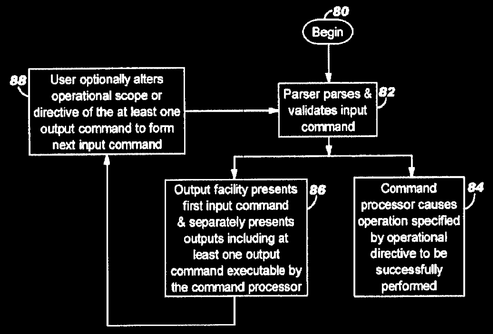
History
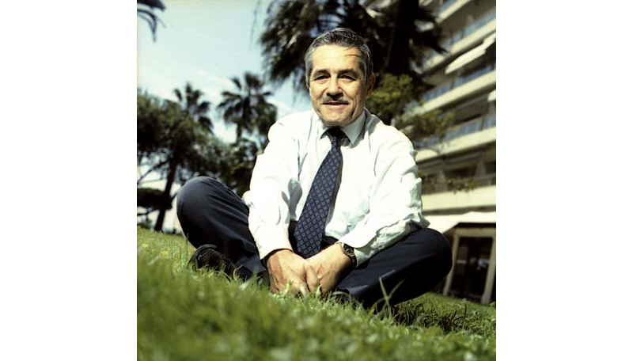Louis Pouzin
CTSS ca. '63
RUNCOM
Multics ca. '64
shell
(later in '72:
datagram
packet comms
CYCLADES
Internets)
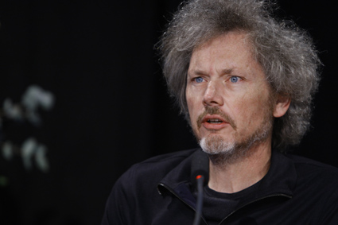
Bill Joy
vi ('76)
termcap
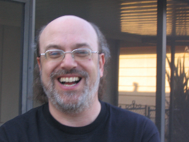
Ken Arnold
curses ('77)
Ken Arnold
curses(3) ('77)
pcurses ('82)
ncurses ('93)
...
Ecology?
Ecological
Interface
Design
interface
design
unscientific
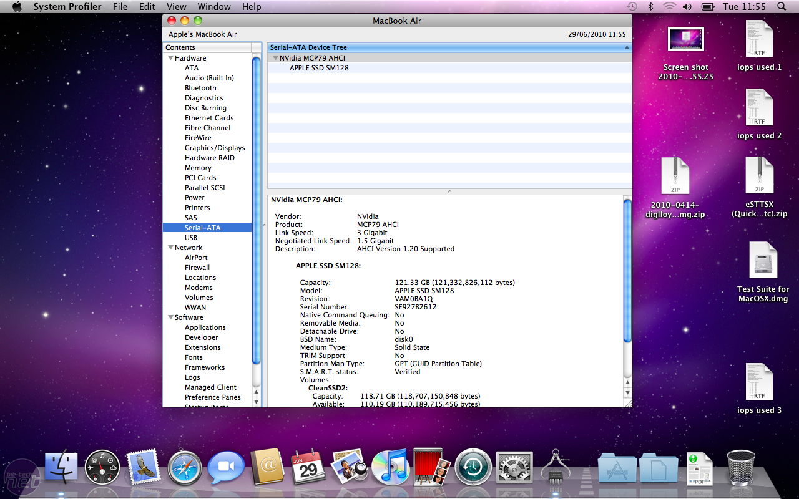
artistic
(if lucky)
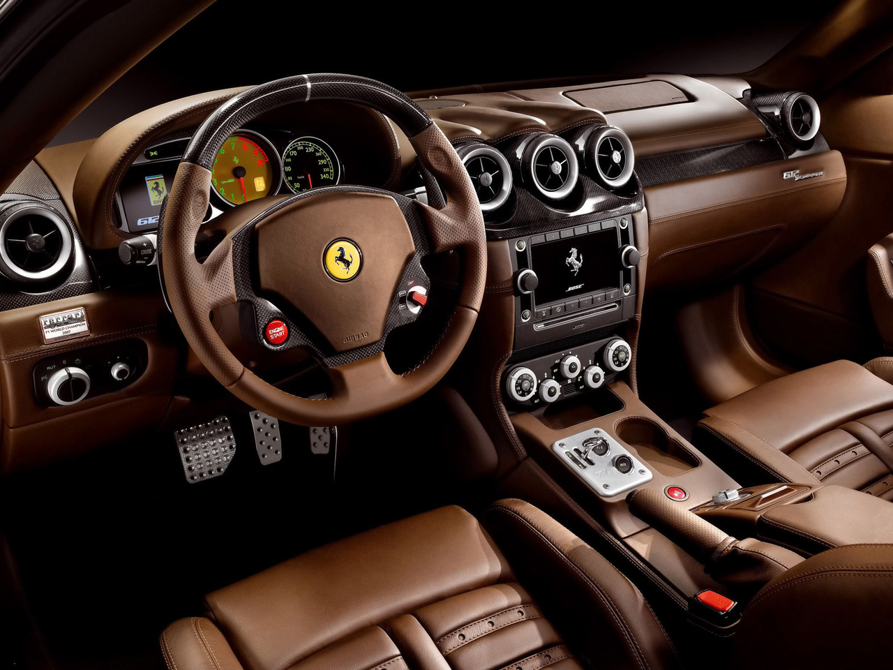
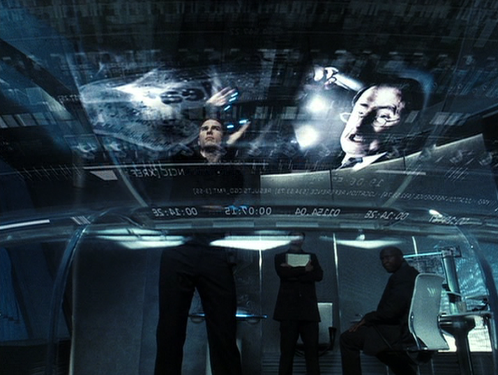
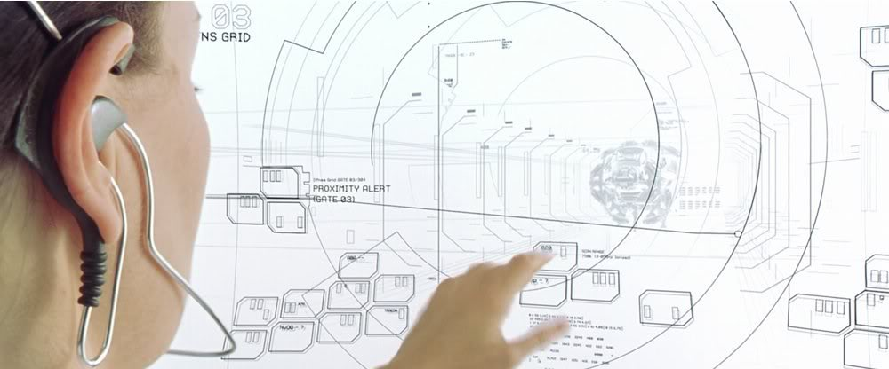
exceptions
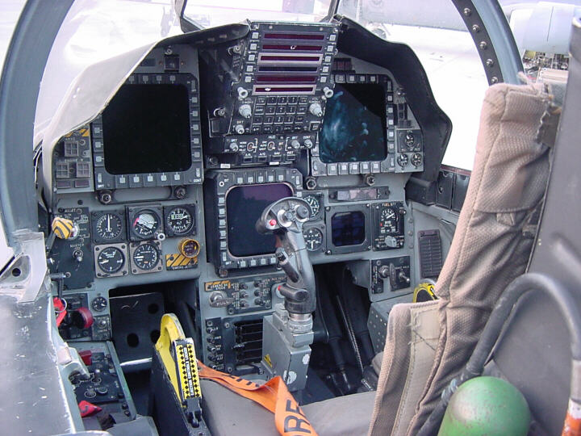
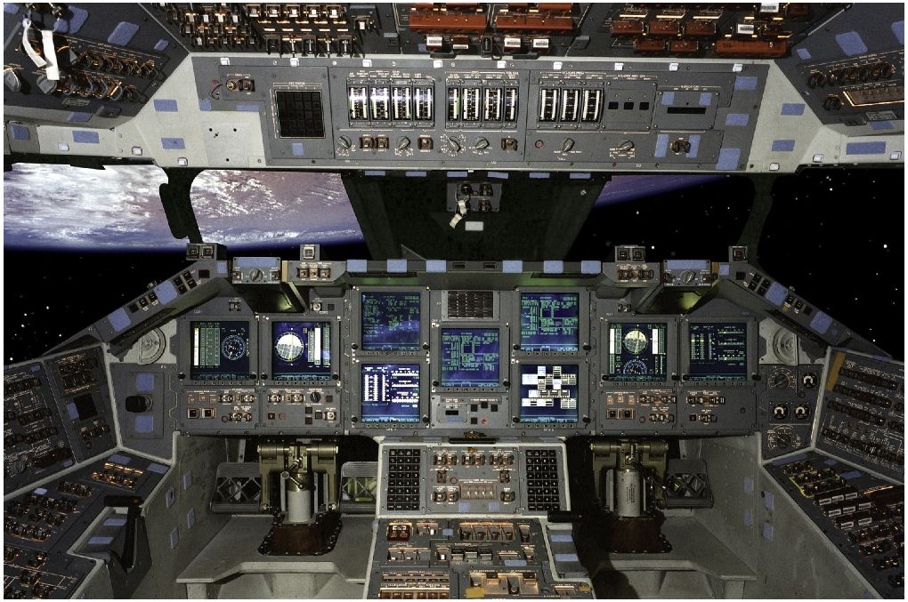
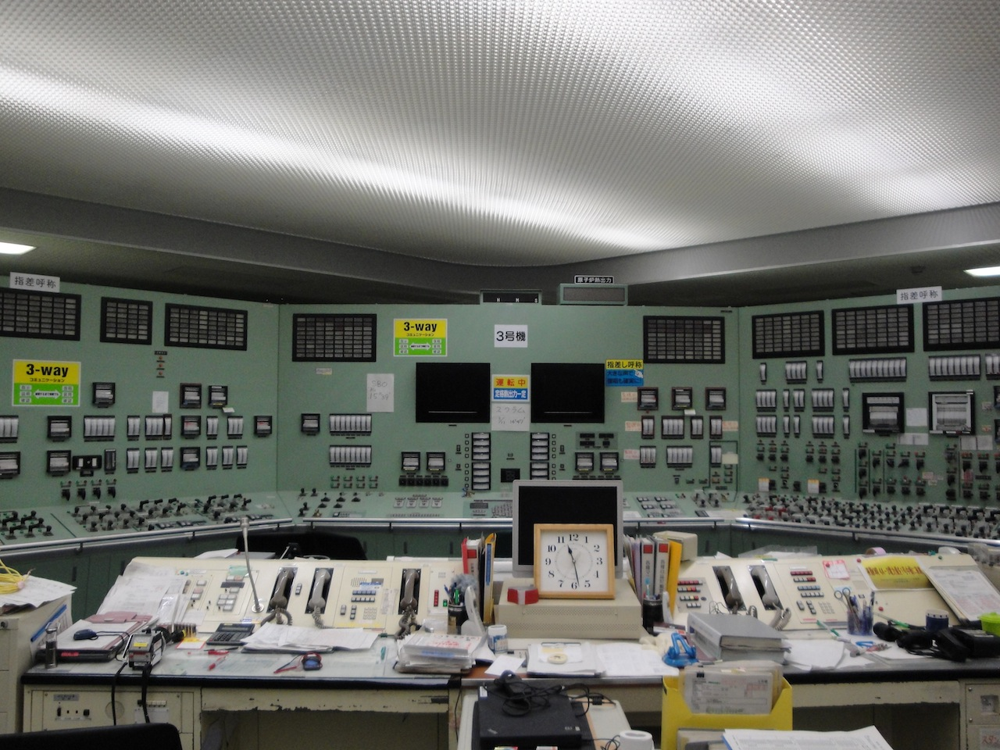
but usually
text interface:
even less
scientific
first kept scientific
thanks to limitations
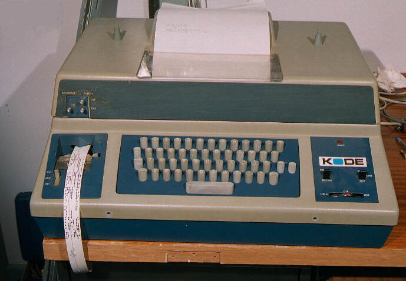
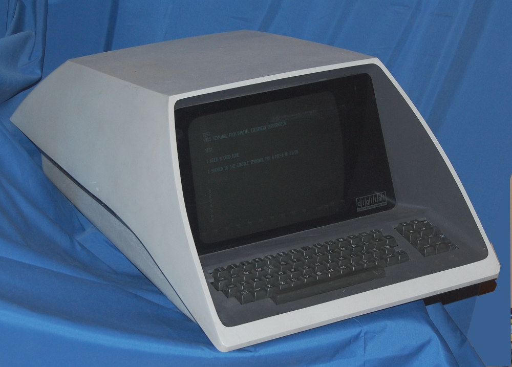
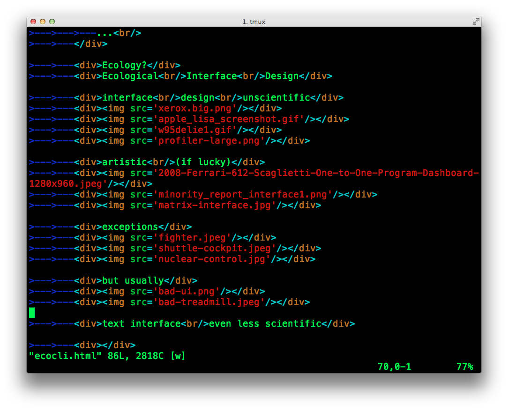
now at mercy of
each particular
developer
User-
Centered
Design
- predetermined environment
- explicit understanding
- user involvement in design
- completely defined procedures
Ecological
Interface
Design
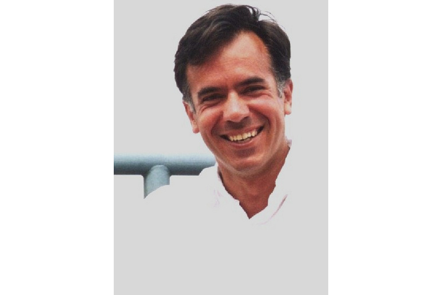
late 80s
Kim Vicente
Jens Rasmussen
ecological
psychology
- whole workflow
- cognitive control
- unanticipated tasks
- partial understading of
- constraints and complexity
applying
EID
CLI —
a resonating
display of EID
CLI vs TUI/GUI
learning and retention similar
perceived qualities lower for CLI
IBM
z/OS
TSO/E
ISPF
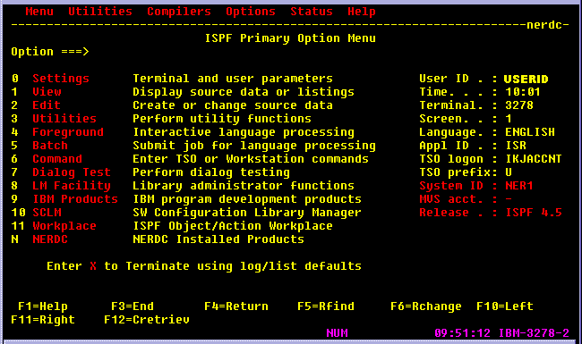
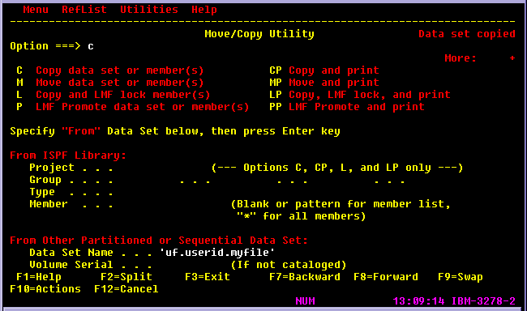